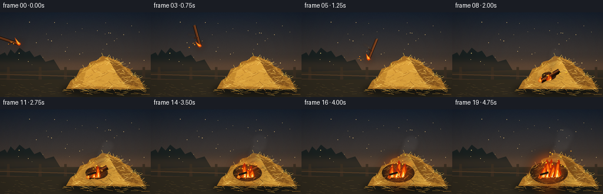
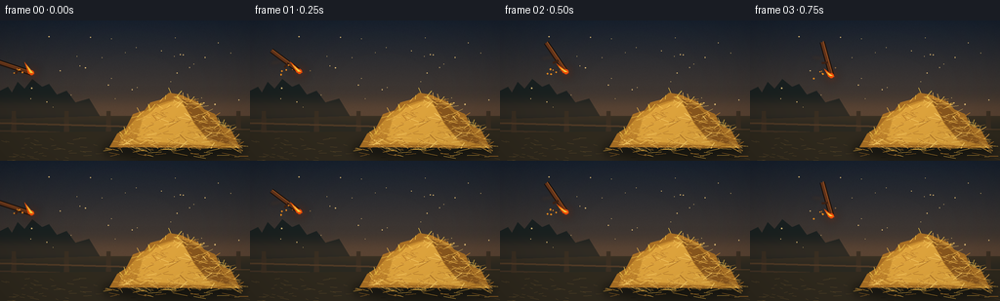
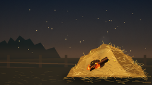
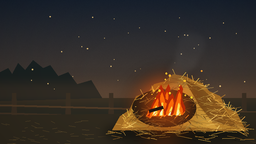
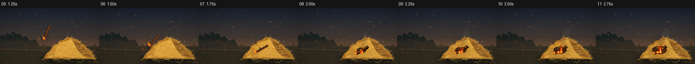

CODING AGENTS AS PIXEL WORLD MODELS
traex/GPT-5.6-Sol · phygen_143
点击播放 · 原生 RGB 像素
逐轮保存的候选
回放视频、检查图与代码变化。
每份候选均可单独播放。实际图片检查记录在下方工具轨迹中。
候选 01播放与检查图
点击播放 · 原生 RGB 像素


展开代码变化
--- 上一保存版本
+++ 本次保存版本
@@ -0,0 +1,304 @@
+from pathlib import Path
+import math
+import numpy as np
+from PIL import Image, ImageDraw, ImageFilter
+import artifact_io
+
+# Deterministic procedural animation: no external assets.
+W, H, N = 256, 144, 20
+S = 3
+rng = np.random.default_rng(143)
+
+
+def sc(v):
+ return int(round(v * S))
+
+
+def pts(seq):
+ return [(sc(x), sc(y)) for x, y in seq]
+
+
+def mound_top(x):
+ # Asymmetric loose haystack silhouette.
+ u = (x - 181.0) / 63.0
+ dome = 126 - 50 * max(0.0, 1.0 - abs(u) ** 1.55)
+ return dome + 2.4 * math.sin(x * .21) + 1.2 * math.sin(x * .53)
+
+# Persistent hay strands: stable from frame to frame.
+hay_strands = []
+for _ in range(355):
+ x = rng.uniform(119, 243)
+ top = mound_top(x)
+ if top > 126:
+ continue
+ y = rng.uniform(top + 1, 131)
+ length = rng.uniform(3.5, 15)
+ angle = rng.choice([-1, 1]) * rng.uniform(.12, 1.25) + rng.normal(0, .16)
+ x2 = x + math.cos(angle) * length
+ y2 = y + math.sin(angle) * length * .55
+ col = rng.choice([(221,164,65), (246,194,83), (189,126,43), (255,211,107), (166,107,36)])
+ width = rng.choice([0.35, 0.45, 0.6, 0.75])
+ hay_strands.append((x, y, x2, y2, col, width))
+
+# Loose pieces around the stack.
+loose_hay = []
+for _ in range(48):
+ x = rng.uniform(101, 249); y = rng.uniform(128, 140)
+ le = rng.uniform(4, 17); a = rng.uniform(-.25, .25)
+ loose_hay.append((x, y, x + le * math.cos(a), y + le * math.sin(a),
+ rng.choice([(203,145,49),(238,184,69),(160,105,37)])))
+
+# Small fixed stars/dust motes add depth without distracting.
+dust = [(rng.uniform(8, 248), rng.uniform(15, 92), rng.uniform(.25, .65)) for _ in range(38)]
+
+
+def background(frame):
+ h, w = H*S, W*S
+ yy = np.linspace(0, 1, h)[:, None]
+ top = np.array([24, 34, 48.], float)
+ bot = np.array([104, 78, 54.], float)
+ grad = top[None,None,:]*(1-yy[:,:,None]) + bot[None,None,:]*yy[:,:,None]
+ arr = np.repeat(grad, w, axis=1)
+ # Fine cinematic grain, deterministic per frame.
+ rr = np.random.default_rng(900 + frame)
+ arr += rr.normal(0, 1.2, (h,w,1))
+ return Image.fromarray(np.uint8(np.clip(arr,0,255)), 'RGB').convert('RGBA')
+
+
+def add_background_details(im, frame):
+ d = ImageDraw.Draw(im, 'RGBA')
+ # Distant tree silhouettes and fence establish outdoor field scale.
+ d.rectangle((0, sc(98), sc(256), sc(144)), fill=(43,42,34,255))
+ tree = [(0,101),(0,72),(8,68),(12,74),(18,63),(25,70),(33,60),(43,68),(50,65),
+ (58,76),(68,72),(77,84),(91,80),(102,98)]
+ d.polygon(pts(tree), fill=(26,34,34,220))
+ # Sunset haze at horizon.
+ haze = Image.new('RGBA', im.size, (0,0,0,0)); hd = ImageDraw.Draw(haze)
+ hd.rectangle((0,sc(79),sc(256),sc(107)), fill=(209,117,54,34))
+ im.alpha_composite(haze.filter(ImageFilter.GaussianBlur(sc(8))))
+ # Fence, dim and behind the subject.
+ for x in [14, 68, 111, 244]:
+ d.polygon(pts([(x-2,93),(x+2,93),(x+3,127),(x-3,127)]), fill=(60,48,35,180))
+ d.line(pts([(0,105),(256,112)]), fill=(82,60,39,190), width=sc(2))
+ d.line(pts([(0,113),(256,120)]), fill=(67,52,37,180), width=sc(2))
+ # Ground bands and subtle texture.
+ d.polygon(pts([(0,115),(256,112),(256,144),(0,144)]), fill=(49,43,31,255))
+ for x, y, r in dust:
+ a = int(22 + 7*math.sin(frame*.23+x))
+ d.ellipse((sc(x-r),sc(y-r),sc(x+r),sc(y+r)), fill=(226,189,119,a))
+ grng = np.random.default_rng(44)
+ for _ in range(90):
+ x=grng.uniform(0,256); y=grng.uniform(119,144); le=grng.uniform(2,9)
+ d.line(pts([(x,y),(x+le,y+grng.uniform(-1,2))]), fill=(95,75,42,grng.integers(25,70)), width=sc(.45))
+
+
+def draw_hay(im, frame, burn):
+ # Contact shadow.
+ shadow = Image.new('RGBA', im.size, (0,0,0,0)); sd=ImageDraw.Draw(shadow)
+ sd.ellipse((sc(104),sc(122),sc(252),sc(143)), fill=(5,8,7,150))
+ im.alpha_composite(shadow.filter(ImageFilter.GaussianBlur(sc(5))))
+ d = ImageDraw.Draw(im, 'RGBA')
+ silhouette = [(112,130),(120,116),(129,110),(136,96),(148,92),(154,84),(165,81),
+ (173,74),(185,76),(193,80),(202,83),(209,91),(220,96),(225,107),
+ (237,113),(246,131)]
+ d.polygon(pts(silhouette), fill=(170,112,37,255))
+ # Soft bands model the rounded volume.
+ d.polygon(pts([(121,127),(130,111),(143,96),(165,85),(181,80),(199,87),(221,103),(239,128)]),
+ fill=(199,139,46,255))
+ d.polygon(pts([(139,123),(147,99),(163,88),(179,82),(190,87),(199,107),(218,129)]),
+ fill=(224,165,61,210))
+ d.polygon(pts([(184,79),(201,88),(221,105),(239,128),(213,122),(199,105)]),
+ fill=(139,88,30,150))
+ # Burnt patch expands only after contact.
+ if burn > 0:
+ cx, cy = 164, 108
+ rx, ry = 8 + 24*burn, 4 + 15*burn
+ d.ellipse((sc(cx-rx),sc(cy-ry),sc(cx+rx),sc(cy+ry)), fill=(35,29,20,int(80+130*burn)))
+ d.ellipse((sc(cx-rx*.55),sc(cy-ry*.45),sc(cx+rx*.58),sc(cy+ry*.6)), fill=(22,20,17,int(60+110*burn)))
+ # Dense individual straw fibers, clipped approximately by generated positions.
+ for x,y,x2,y2,col,wid in hay_strands:
+ # Darken fibers close to ignition as fire spreads.
+ dist = math.hypot((x-166)/1.25, y-108)
+ if burn > 0 and dist < 10+24*burn:
+ factor = max(.20, dist/(10+24*burn))
+ col2 = tuple(int(c*(.25+.6*factor)) for c in col)
+ else:
+ col2 = col
+ d.line(pts([(x,y),(x2,y2)]), fill=(*col2,225), width=max(1,sc(wid)))
+ if wid>.55:
+ d.point((sc(x2),sc(y2)), fill=(255,220,124,180))
+ for x,y,x2,y2,col in loose_hay:
+ d.line(pts([(x,y),(x2,y2)]), fill=(*col,205), width=sc(.55))
+ # Strong rim straws make the pile legible against the dark backdrop.
+ rr=np.random.default_rng(71)
+ for i in range(42):
+ x=rr.uniform(120,241); y=mound_top(x)+rr.uniform(-1,2)
+ dx=rr.uniform(-6,6); dy=rr.uniform(-7,2)
+ d.line(pts([(x,y),(x+dx,y+dy)]), fill=(237,185+rr.integers(-15,16),72,220), width=sc(.55))
+
+
+def draw_glow(im, centers, strength):
+ if strength <= 0: return
+ layer=Image.new('RGBA', im.size,(0,0,0,0)); ld=ImageDraw.Draw(layer)
+ for x,y,r in centers:
+ ld.ellipse((sc(x-r),sc(y-r),sc(x+r),sc(y+r)), fill=(255,91,12,int(70*strength)))
+ im.alpha_composite(layer.filter(ImageFilter.GaussianBlur(sc(9))))
+
+
+def flame_shape(draw, x, base, height, width, t, phase, color, alpha=255):
+ # Symmetric sampled flame with a wind-driven, animated tip.
+ n=8
+ tipx=x + math.sin(t*2.4+phase)*width*.28 + height*.10
+ left=[]; right=[]
+ for j in range(n+1):
+ q=j/n
+ yy=base-height*q
+ taper=(1-q)**.55
+ wav=math.sin(q*9 + t*3.2 + phase)*width*.10*taper
+ center=x + (tipx-x)*q + wav
+ half=width*taper*(.52 + .10*math.sin(q*7+phase))
+ left.append((center-half,yy)); right.append((center+half,yy))
+ poly=left+right[::-1]
+ draw.polygon(pts(poly), fill=(*color,alpha))
+
+
+def draw_fire_and_smoke(im, frame, burn):
+ if burn <= 0: return
+ t=frame*.61
+ # Smoke rises and drifts right; new puffs are denser near the flame.
+ smoke=Image.new('RGBA', im.size,(0,0,0,0)); sd=ImageDraw.Draw(smoke)
+ smoke_count = 3 + int(7*burn)
+ for i in range(smoke_count):
+ age = ((frame*.42 + i*.93) % (3.5+2*burn))
+ x = 166 + age*(3.1+2*burn) + math.sin(i*2.1+t)*2.3
+ y = 94 - age*(7.2+2*burn)
+ r = 3.5 + age*1.65 + burn*2
+ shade=int(42+22*age)
+ alpha=int((45+55*burn)*max(.15,1-age/6))
+ sd.ellipse((sc(x-r*1.1),sc(y-r),sc(x+r*1.1),sc(y+r)), fill=(shade,shade-2,shade-5,alpha))
+ im.alpha_composite(smoke.filter(ImageFilter.GaussianBlur(sc(3.1))))
+
+ # Warm illumination is cast on adjacent hay before opaque flame layers.
+ draw_glow(im, [(166,105,10+20*burn)], .55+burn)
+ fd=ImageDraw.Draw(im, 'RGBA')
+ count=2+int(4*burn)
+ for i in range(count):
+ spread=(-1 if i%2==0 else 1)*(i//2)*5.4
+ x=165+spread+math.sin(t+i*1.7)*1.4
+ h=(9+25*burn)*(0.72+0.25*math.sin(t*1.8+i*2.6))
+ w=5.5+6.0*burn
+ flame_shape(fd,x,116-i%2*1.5,h,w,t,i*1.31,(183,43,8),245)
+ flame_shape(fd,x+.3,116-i%2*1.5,h*.76,w*.67,t,i*1.31+.3,(255,107,8),255)
+ flame_shape(fd,x+.7,115.5,h*.43,w*.34,t,i*1.31+.6,(255,224,84),255)
+ if burn>.45:
+ flame_shape(fd,x+.5,115,h*.19,w*.16,t,i*1.31+.8,(255,252,201),245)
+ # Glowing line along nearby dry fibers.
+ for i in range(int(3+9*burn)):
+ x=146+i*3.6
+ yy=116+math.sin(i*1.8)*2
+ fd.line(pts([(x,yy),(x+3,yy-3)]), fill=(255,128,23,int(100+120*burn)), width=sc(.65))
+ # Rising sparks.
+ sr=np.random.default_rng(8000+frame)
+ for i in range(int(4+12*burn)):
+ x=166+sr.normal(0,8+burn*5); y=108-sr.uniform(4,39)*burn
+ rad=sr.uniform(.35,1.1)
+ fd.ellipse((sc(x-rad),sc(y-rad),sc(x+rad),sc(y+rad)), fill=(255,151+sr.integers(0,80),42,int(sr.integers(130,245))))
+
+
+def stick_endpoints(cx,cy,angle,length=36):
+ a=math.radians(angle); ux=math.cos(a); uy=math.sin(a)
+ return (cx-ux*length/2,cy-uy*length/2),(cx+ux*length/2,cy+uy*length/2)
+
+
+def draw_stick(im, frame):
+ # Flight lasts through frame 7; at frame 8 the stick settles in the hay.
+ if frame <= 7:
+ p=frame/7.0
+ cx=15+148*p
+ cy=48+57*p-34*math.sin(math.pi*p)
+ angle=18+132*p
+ moving=True
+ else:
+ # Tiny damped settling movement after impact.
+ q=frame-8
+ cx=165+1.8*math.exp(-q*.7)*math.sin(q*2.5)
+ cy=106+1.2*math.exp(-q*.7)*math.cos(q*2.2)
+ angle=151+4*math.exp(-q*.65)*math.sin(q*2.1)
+ moving=False
+ a,b=stick_endpoints(cx,cy,angle)
+ # Short directional motion trail in early flight.
+ if moving and frame>0:
+ trail=Image.new('RGBA', im.size,(0,0,0,0)); td=ImageDraw.Draw(trail)
+ p=frame/7.0
+ pcx=15+148*max(0,p-.07); pcy=48+57*max(0,p-.07)-34*math.sin(math.pi*max(0,p-.07))
+ td.line(pts([(pcx-5,pcy),(cx-2,cy)]), fill=(255,124,26,45), width=sc(3))
+ im.alpha_composite(trail.filter(ImageFilter.GaussianBlur(sc(2))))
+ # Stick shadow at impact.
+ d=ImageDraw.Draw(im,'RGBA')
+ if not moving:
+ d.line(pts([(a[0]+2,a[1]+3),(b[0]+2,b[1]+3)]), fill=(9,7,5,150), width=sc(4))
+ # Bark outline and warm wooden core.
+ d.line(pts([a,b]), fill=(29,18,12,255), width=sc(5.2))
+ d.line(pts([a,b]), fill=(105,55,27,255), width=sc(3.3))
+ d.line(pts([(a[0]+1,a[1]-1),(b[0]+1,b[1]-1)]), fill=(173,93,38,210), width=sc(.65))
+ # A tiny branch spur makes it unmistakably a stick.
+ ux=(b[0]-a[0])/36; uy=(b[1]-a[1])/36
+ sx=a[0]+ux*22; sy=a[1]+uy*22
+ d.line(pts([(sx,sy),(sx-uy*6-ux*1,sy+ux*6-uy*1)]), fill=(63,34,20,255), width=sc(2.2))
+
+ # Burning leading end (b). After landing, it remains the ignition source.
+ glow=Image.new('RGBA', im.size,(0,0,0,0)); gd=ImageDraw.Draw(glow)
+ gd.ellipse((sc(b[0]-6),sc(b[1]-6),sc(b[0]+6),sc(b[1]+6)),fill=(255,72,5,110))
+ im.alpha_composite(glow.filter(ImageFilter.GaussianBlur(sc(5))))
+ d=ImageDraw.Draw(im,'RGBA')
+ d.ellipse((sc(b[0]-2.5),sc(b[1]-2.5),sc(b[0]+2.5),sc(b[1]+2.5)),fill=(247,76,7,255))
+ d.ellipse((sc(b[0]-.9),sc(b[1]-.9),sc(b[0]+.9),sc(b[1]+.9)),fill=(255,234,101,255))
+ # Small attached flame points upward and trails left during flight.
+ if moving:
+ fx=b[0]-2; fy=b[1]
+ tip=(fx-5-3*math.sin(frame),fy-9-2*math.cos(frame*.9))
+ d.polygon(pts([(b[0]-3,b[1]+1),(b[0]+3,b[1]+1),tip]),fill=(248,81,7,245))
+ d.polygon(pts([(b[0]-1.5,b[1]),(b[0]+1.5,b[1]),(tip[0]+2,tip[1]+3)]),fill=(255,216,66,255))
+ # Spark train behind the thrown burning tip.
+ sr=np.random.default_rng(300+frame)
+ for j in range(5):
+ ex=b[0]-sr.uniform(6,19); ey=b[1]+sr.normal(0,4)
+ r=sr.uniform(.35,.9)
+ d.ellipse((sc(ex-r),sc(ey-r),sc(ex+r),sc(ey+r)),fill=(255,145,31,int(210-j*22)))
+ else:
+ flame_shape(d,b[0],b[1]+2,7+2*math.sin(frame),4.2,frame*.5,0.4,(255,101,8),250)
+ flame_shape(d,b[0],b[1]+1,4.2,2.2,frame*.5,.7,(255,225,79),255)
+
+
+def render(frame):
+ im=background(frame)
+ add_background_details(im,frame)
+ # Fire begins one frame after impact, then accelerates visibly.
+ burn=0.0 if frame<8 else min(1.0, ((frame-7)/12.0)**.72)
+ # Glow behind hay adds realistic reflected illumination.
+ if burn>0:
+ draw_glow(im,[(164,108,12+26*burn)],.35+.65*burn)
+ draw_hay(im,frame,burn)
+ # Settled stick is partially embedded, but remains clearly visible on top.
+ draw_stick(im,frame)
+ draw_fire_and_smoke(im,frame,burn)
+ # Re-draw a short charred part of settled stick over flames for continuity.
+ if frame>=9:
+ d=ImageDraw.Draw(im,'RGBA')
+ d.line(pts([(149,111),(163,107)]),fill=(35,22,15,230),width=sc(3.2))
+ # Mild vignette focuses attention on projectile and ignition point.
+ arr=np.array(im.convert('RGB').resize((W,H),Image.Resampling.LANCZOS),dtype=np.float32)
+ yy,xx=np.mgrid[0:H,0:W]
+ dx=(xx-W*.53)/(W*.72); dy=(yy-H*.52)/(H*.90)
+ vig=np.clip(1-.22*(dx*dx+dy*dy),.72,1.0)[...,None]
+ arr*=vig
+ return np.uint8(np.clip(arr,0,255))
+
+
+def main():
+ frames=np.stack([render(i) for i in range(N)],axis=0)
+ artifact_io.save(frames, Path(__file__).resolve().parent)
+ print('saved',frames.shape,frames.dtype,'range',frames.min(),frames.max())
+
+if __name__=='__main__':
+ main()
可观测工具轨迹
实际执行的命令与返回图片。
命令 1exit 0
/bin/bash -lc "cat prompt.txt && printf '\\n--- GENERATION_RULES.md ---\\n' && cat GENERATION_RULES.md"
命令 2exit 0
/bin/bash -lc "cat task_spec.json && printf '\\n--- FILES ---\\n' && find . -maxdepth 2 -type f -printf '%p\\n' | sort"
命令 3exit 0
/bin/bash -lc "command -v ffmpeg; command -v python3; python3 - <<'PY' mods=['PIL','numpy','cv2','imageio','moviepy','cairo'] for m in mods: try: x=__import__(m); print(m,'OK',getattr(x,'__version__','')) except Exception as e: print(m,'NO',str(e)[:100]) PY"
命令 4exit 0
/bin/bash -lc "sed -n '1,260p' artifact_io.py"
命令 5exit 0
/bin/bash -lc "cat > generate.py <<'PY'
from pathlib import Path
import math
import numpy as np
from PIL import Image, ImageDraw, ImageFilter
import artifact_io
# Deterministic procedural animation: no external assets.
W, H, N = 256, 144, 20
S = 3
rng = np.random.default_rng(143)
def sc(v):
return int(round(v * S))
def pts(seq):
return [(sc(x), sc(y)) for x, y in seq]
def mound_top(x):
# Asymmetric loose haystack silhouette.
u = (x - 181.0) / 63.0
dome = 126 - 50 * max(0.0, 1.0 - abs(u) ** 1.55)
return dome + 2.4 * math.sin(x * .21) + 1.2 * math.sin(x * .53)
# Persistent hay strands: stable from frame to frame.
hay_strands = []
for _ in range(355):
x = rng.uniform(119, 243)
top = mound_top(x)
if top > 126:
continue
y = rng.uniform(top + 1, 131)
length = rng.uniform(3.5, 15)
angle = rng.choice([-1, 1]) * rng.uniform(.12, 1.25) + rng.normal(0, .16)
x2 = x + math.cos(angle) * length
y2 = y + math.sin(angle) * length * .55
col = rng.choice([(221,164,65), (246,194,83), (189,126,43), (255,211,107), (166,107,36)])
width = rng.choice([0.35, 0.45, 0.6, 0.75])
hay_strands.append((x, y, x2, y2, col, width))
# Loose pieces around the stack.
loose_hay = []
for _ in range(48):
x = rng.uniform(101, 249); y = rng.uniform(128, 140)
le = rng.uniform(4, 17); a = rng.uniform(-.25, .25)
loose_hay.append((x, y, x + le * math.cos(a), y + le * math.sin(a),
rng.choice([(203,145,49),(238,184,69),(160,105,37)])))
# Small fixed stars/dust motes add depth without distracting.
dust = [(rng.uniform(8, 248), rng.uniform(15, 92), rng.uniform(.25, .65)) for _ in range(38)]
def background(frame):
h, w = H*S, W*S
yy = np.linspace(0, 1, h)[:, None]
top = np.array([24, 34, 48.], float)
bot = np.array([104, 78, 54.], float)
grad = top[None,None,:]*(1-yy[:,:,None]) + bot[None,None,:]*yy[:,:,None]
arr = np.repeat(grad, w, axis=1)
# Fine cinematic grain, deterministic per frame.
rr = np.random.default_rng(900 + frame)
arr += rr.normal(0, 1.2, (h,w,1))
return Image.fromarray(np.uint8(np.clip(arr,0,255)), 'RGB').convert('RGBA')
def add_background_details(im, frame):
d = ImageDraw.Draw(im, 'RGBA')
# Distant tree silhouettes and fence establish outdoor field scale.
d.rectangle((0, sc(98), sc(256), sc(144)), fill=(43,42,34,255))
tree = [(0,101),(0,72),(8,68),(12,74),(18,63),(25,70),(33,60),(43,68),(50,65),
(58,76),(68,72),(77,84),(91,80),(102,98)]
d.polygon(pts(tree), fill=(26,34,34,220))
# Sunset haze at horizon.
haze = Image.new('RGBA', im.size, (0,0,0,0)); hd = ImageDraw.Draw(haze)
hd.rectangle((0,sc(79),sc(256),sc(107)), fill=(209,117,54,34))
im.alpha_composite(haze.filter(ImageFilter.GaussianBlur(sc(8))))
# Fence, dim and behind the subject.
for x in [14, 68, 111, 244]:
d.polygon(pts([(x-2,93),(x+2,93),(x+3,127),(x-3,127)]), fill=(60,48,35,180))
d.line(pts([(0,105),(256,112)]), fill=(82,60,39,190), width=sc(2))
d.line(pts([(0,113),(256,120)]), fill=(67,52,37,180), width=sc(2))
# Ground bands and subtle texture.
d.polygon(pts([(0,115),(256,112),(256,144),(0,144)]), fill=(49,43,31,255))
for x, y, r in dust:
a = int(22 + 7*math.sin(frame*.23+x))
d.ellipse((sc(x-r),sc(y-r),sc(x+r),sc(y+r)), fill=(226,189,119,a))
grng = np.random.default_rng(44)
for _ in range(90):
x=grng.uniform(0,256); y=grng.uniform(119,144); le=grng.uniform(2,9)
d.line(pts([(x,y),(x+le,y+grng.uniform(-1,2))]), fill=(95,75,42,grng.integers(25,70)), width=sc(.45))
def draw_hay(im, frame, burn):
# Contact shadow.
shadow = Image.new('RGBA', im.size, (0,0,0,0)); sd=ImageDraw.Draw(shadow)
sd.ellipse((sc(104),sc(122),sc(252),sc(143)), fill=(5,8,7,150))
im.alpha_composite(shadow.filter(ImageFilter.GaussianBlur(sc(5))))
d = ImageDraw.Draw(im, 'RGBA')
silhouette = [(112,130),(120,116),(129,110),(136,96),(148,92),(154,84),(165,81),
(173,74),(185,76),(193,80),(202,83),(209,91),(220,96),(225,107),
(237,113),(246,131)]
d.polygon(pts(silhouette), fill=(170,112,37,255))
# Soft bands model the rounded volume.
d.polygon(pts([(121,127),(130,111),(143,96),(165,85),(181,80),(199,87),(221,103),(239,128)]),
fill=(199,139,46,255))
d.polygon(pts([(139,123),(147,99),(163,88),(179,82),(190,87),(199,107),(218,129)]),
fill=(224,165,61,210))
d.polygon(pts([(184,79),(201,88),(221,105),(239,128),(213,122),(199,105)]),
fill=(139,88,30,150))
# Burnt patch expands only after contact.
if burn > 0:
cx, cy = 164, 108
rx, ry = 8 + 24*burn, 4 + 15*burn
d.ellipse((sc(cx-rx),sc(cy-ry),sc(cx+rx),sc(cy+ry)), fill=(35,29,20,int(80+130*burn)))
d.ellipse((sc(cx-rx*.55),sc(cy-ry*.45),sc(cx+rx*.58),sc(cy+ry*.6)), fill=(22,20,17,int(60+110*burn)))
# Dense individual straw fibers, clipped approximately by generated positions.
for x,y,x2,y2,col,wid in hay_strands:
# Darken fibers close to ignition as fire spreads.
dist = math.hypot((x-166)/1.25, y-108)
if burn > 0 and dist < 10+24*burn:
factor = max(.20, dist/(10+24*burn))
col2 = tuple(int(c*(.25+.6*factor)) for c in col)
else:
col2 = col
d.line(pts([(x,y),(x2,y2)]), fill=(*col2,225), width=max(1,sc(wid)))
if wid>.55:
d.point((sc(x2),sc(y2)), fill=(255,220,124,180))
for x,y,x2,y2,col in loose_hay:
d.line(pts([(x,y),(x2,y2)]), fill=(*col,205), width=sc(.55))
# Strong rim straws make the pile legible against the dark backdrop.
rr=np.random.default_rng(71)
for i in range(42):
x=rr.uniform(120,241); y=mound_top(x)+rr.uniform(-1,2)
dx=rr.uniform(-6,6); dy=rr.uniform(-7,2)
d.line(pts([(x,y),(x+dx,y+dy)]), fill=(237,185+rr.integers(-15,16),72,220), width=sc(.55))
def draw_glow(im, centers, strength):
if strength <= 0: return
layer=Image.new('RGBA', im.size,(0,0,0,0)); ld=ImageDraw.Draw(layer)
for x,y,r in centers:
ld.ellipse((sc(x-r),sc(y-r),sc(x+r),sc(y+r)), fill=(255,91,12,int(70*strength)))
im.alpha_composite(layer.filter(ImageFilter.GaussianBlur(sc(9))))
def flame_shape(draw, x, base, height, width, t, phase, color, alpha=255):
# Symmetric sampled flame with a wind-driven, animated tip.
n=8
tipx=x + math.sin(t*2.4+phase)*width*.28 + height*.10
left=[]; right=[]
for j in range(n+1):
q=j/n
yy=base-height*q
taper=(1-q)**.55
wav=math.sin(q*9 + t*3.2 + phase)*width*.10*taper
center=x + (tipx-x)*q + wav
half=width*taper*(.52 + .10*math.sin(q*7+phase))
left.append((center-half,yy)); right.append((center+half,yy))
poly=left+right[::-1]
draw.polygon(pts(poly), fill=(*color,alpha))
def draw_fire_and_smoke(im, frame, burn):
if burn <= 0: return
t=frame*.61
# Smoke rises and drifts right; new puffs are denser near the flame.
smoke=Image.new('RGBA', im.size,(0,0,0,0)); sd=ImageDraw.Draw(smoke)
smoke_count = 3 + int(7*burn)
for i in range(smoke_count):
age = ((frame*.42 + i*.93) % (3.5+2*burn))
x = 166 + age*(3.1+2*burn) + math.sin(i*2.1+t)*2.3
y = 94 - age*(7.2+2*burn)
r = 3.5 + age*1.65 + burn*2
shade=int(42+22*age)
alpha=int((45+55*burn)*max(.15,1-age/6))
sd.ellipse((sc(x-r*1.1),sc(y-r),sc(x+r*1.1),sc(y+r)), fill=(shade,shade-2,shade-5,alpha))
im.alpha_composite(smoke.filter(ImageFilter.GaussianBlur(sc(3.1))))
# Warm illumination is cast on adjacent hay before opaque flame layers.
draw_glow(im, [(166,105,10+20*burn)], .55+burn)
fd=ImageDraw.Draw(im, 'RGBA')
count=2+int(4*burn)
for i in range(count):
spread=(-1 if i%2==0 else 1)*(i//2)*5.4
x=165+spread+math.sin(t+i*1.7)*1.4
h=(9+25*burn)*(0.72+0.25*math.sin(t*1.8+i*2.6))
w=5.5+6.0*burn
flame_shape(fd,x,116-i%2*1.5,h,w,t,i*1.31,(183,43,8),245)
flame_shape(fd,x+.3,116-i%2*1.5,h*.76,w*.67,t,i*1.31+.3,(255,107,8),255)
flame_shape(fd,x+.7,115.5,h*.43,w*.34,t,i*1.31+.6,(255,224,84),255)
if burn>.45:
flame_shape(fd,x+.5,115,h*.19,w*.16,t,i*1.31+.8,(255,252,201),245)
# Glowing line along nearby dry fibers.
for i in range(int(3+9*burn)):
x=146+i*3.6
yy=116+math.sin(i*1.8)*2
fd.line(pts([(x,yy),(x+3,yy-3)]), fill=(255,128,23,int(100+120*burn)), width=sc(.65))
# Rising sparks.
sr=np.random.default_rng(8000+frame)
for i in range(int(4+12*burn)):
x=166+sr.normal(0,8+burn*5); y=108-sr.uniform(4,39)*burn
rad=sr.uniform(.35,1.1)
fd.ellipse((sc(x-rad),sc(y-rad),sc(x+rad),sc(y+rad)), fill=(255,151+sr.integers(0,80),42,int(sr.integers(130,245))))
def stick_endpoints(cx,cy,angle,length=36):
a=math.radians(angle); ux=math.cos(a); uy=math.sin(a)
return (cx-ux*length/2,cy-uy*length/2),(cx+ux*length/2,cy+uy*length/2)
def draw_stick(im, frame):
# Flight lasts through frame 7; at frame 8 the stick settles in the hay.
if frame <= 7:
p=frame/7.0
cx=15+148*p
cy=48+57*p-34*math.sin(math.pi*p)
angle=18+132*p
moving=True
else:
# Tiny damped settling movement after impact.
q=frame-8
cx=165+1.8*math.exp(-q*.7)*math.sin(q*2.5)
cy=106+1.2*math.exp(-q*.7)*math.cos(q*2.2)
angle=151+4*math.exp(-q*.65)*math.sin(q*2.1)
moving=False
a,b=stick_endpoints(cx,cy,angle)
# Short directional motion trail in early flight.
if moving and frame>0:
trail=Image.new('RGBA', im.size,(0,0,0,0)); td=ImageDraw.Draw(trail)
p=frame/7.0
pcx=15+148*max(0,p-.07); pcy=48+57*max(0,p-.07)-34*math.sin(math.pi*max(0,p-.07))
td.line(pts([(pcx-5,pcy),(cx-2,cy)]), fill=(255,124,26,45), width=sc(3))
im.alpha_composite(trail.filter(ImageFilter.GaussianBlur(sc(2))))
# Stick shadow at impact.
d=ImageDraw.Draw(im,'RGBA')
if not moving:
d.line(pts([(a[0]+2,a[1]+3),(b[0]+2,b[1]+3)]), fill=(9,7,5,150), width=sc(4))
# Bark outline and warm wooden core.
d.line(pts([a,b]), fill=(29,18,12,255), width=sc(5.2))
d.line(pts([a,b]), fill=(105,55,27,255), width=sc(3.3))
d.line(pts([(a[0]+1,a[1]-1),(b[0]+1,b[1]-1)]), fill=(173,93,38,210), width=sc(.65))
# A tiny branch spur makes it unmistakably a stick.
ux=(b[0]-a[0])/36; uy=(b[1]-a[1])/36
sx=a[0]+ux*22; sy=a[1]+uy*22
d.line(pts([(sx,sy),(sx-uy*6-ux*1,sy+ux*6-uy*1)]), fill=(63,34,20,255), width=sc(2.2))
# Burning leading end (b). After landing, it remains the ignition source.
glow=Image.new('RGBA', im.size,(0,0,0,0)); gd=ImageDraw.Draw(glow)
gd.ellipse((sc(b[0]-6),sc(b[1]-6),sc(b[0]+6),sc(b[1]+6)),fill=(255,72,5,110))
im.alpha_composite(glow.filter(ImageFilter.GaussianBlur(sc(5))))
d=ImageDraw.Draw(im,'RGBA')
d.ellipse((sc(b[0]-2.5),sc(b[1]-2.5),sc(b[0]+2.5),sc(b[1]+2.5)),fill=(247,76,7,255))
d.ellipse((sc(b[0]-.9),sc(b[1]-.9),sc(b[0]+.9),sc(b[1]+.9)),fill=(255,234,101,255))
# Small attached flame points upward and trails left during flight.
if moving:
fx=b[0]-2; fy=b[1]
tip=(fx-5-3*math.sin(frame),fy-9-2*math.cos(frame*.9))
d.polygon(pts([(b[0]-3,b[1]+1),(b[0]+3,b[1]+1),tip]),fill=(248,81,7,245))
d.polygon(pts([(b[0]-1.5,b[1]),(b[0]+1.5,b[1]),(tip[0]+2,tip[1]+3)]),fill=(255,216,66,255))
# Spark train behind the thrown burning tip.
sr=np.random.default_rng(300+frame)
for j in range(5):
ex=b[0]-sr.uniform(6,19); ey=b[1]+sr.normal(0,4)
r=sr.uniform(.35,.9)
d.ellipse((sc(ex-r),sc(ey-r),sc(ex+r),sc(ey+r)),fill=(255,145,31,int(210-j*22)))
else:
flame_shape(d,b[0],b[1]+2,7+2*math.sin(frame),4.2,frame*.5,0.4,(255,101,8),250)
flame_shape(d,b[0],b[1]+1,4.2,2.2,frame*.5,.7,(255,225,79),255)
def render(frame):
im=background(frame)
add_background_details(im,frame)
# Fire begins one frame after impact, then accelerates visibly.
burn=0.0 if frame<8 else min(1.0, ((frame-7)/12.0)**.72)
# Glow behind hay adds realistic reflected illumination.
if burn>0:
draw_glow(im,[(164,108,12+26*burn)],.35+.65*burn)
draw_hay(im,frame,burn)
# Settled stick is partially embedded, but remains clearly visible on top.
draw_stick(im,frame)
draw_fire_and_smoke(im,frame,burn)
# Re-draw a short charred part of settled stick over flames for continuity.
if frame>=9:
d=ImageDraw.Draw(im,'RGBA')
d.line(pts([(149,111),(163,107)]),fill=(35,22,15,230),width=sc(3.2))
# Mild vignette focuses attention on projectile and ignition point.
arr=np.array(im.convert('RGB').resize((W,H),Image.Resampling.LANCZOS),dtype=np.float32)
yy,xx=np.mgrid[0:H,0:W]
dx=(xx-W*.53)/(W*.72); dy=(yy-H*.52)/(H*.90)
vig=np.clip(1-.22*(dx*dx+dy*dy),.72,1.0)[...,None]
arr*=vig
return np.uint8(np.clip(arr,0,255))
def main():
frames=np.stack([render(i) for i in range(N)],axis=0)
artifact_io.save(frames, Path(__file__).resolve().parent)
print('saved',frames.shape,frames.dtype,'range',frames.min(),frames.max())
if __name__=='__main__':
main()
PY
python3 generate.py
ls -lh pixels.npz inspection.png index.html frames/00.png frames/19.png"命令 6exit 0
/bin/bash -lc "python3 - <<'PY'
from PIL import Image,ImageDraw
from pathlib import Path
p=Path('.')
ids=range(5,12)
out=Image.new('RGB',(256*len(ids),165),(20,20,20)); d=ImageDraw.Draw(out)
for k,i in enumerate(ids):
im=Image.open(p/'frames'/f'{i:02d}.png').convert('RGB')
out.paste(im,(k*256,21)); d.text((k*256+4,4),f'{i:02d} {i/4:.2f}s',fill='white')
out.save('.tmp/contact_sequence.png')
PY"命令 7exit 0
/bin/bash -lc "python3 - <<'PY'
import json, numpy as np
from pathlib import Path
from PIL import Image
p=Path('.')
s=json.loads((p/'task_spec.json').read_text())
files=sorted((p/'frames').glob('*.png'))
assert len(files)==s['frames']==20
for f in files:
im=Image.open(f)
assert im.mode=='RGB' and im.size==(s['width'],s['height']), (f,im.mode,im.size)
z=np.load(p/'pixels.npz')['pixels']
assert z.shape==(s['height'],s['width'],s['frames']) and z.dtype==np.uint32
assert (p/'index.html').stat().st_size>0 and (p/'inspection.png').stat().st_size>0
# Basic temporal diagnostics from reconstructed frames.
a=np.stack([np.asarray(Image.open(f),dtype=np.int16) for f in files])
d=np.mean(np.abs(np.diff(a,axis=0)),axis=(1,2,3))
print('VALID: 20 RGB PNG frames, 256x144, packed artifact',z.shape,z.dtype)
print('mean adjacent-frame differences:',np.round(d,2).tolist())
print('outputs:',*(f'{x.name}={x.stat().st_size}B' for x in [p/'pixels.npz',p/'index.html',p/'inspection.png']))
PY"命令 8exit 0
/bin/bash -lc "git status --short 2>/dev/null || true; sha256sum generate.py pixels.npz | sed 's# ./# #'"
视觉工具实际返回图片 1

视觉工具实际返回图片 2

视觉工具实际返回图片 3

视觉工具实际返回图片 4

保存候选 1 份；完成命令 8 次；可验证图片返回 4 张。原始 API 响应与完整日志保留在本地。